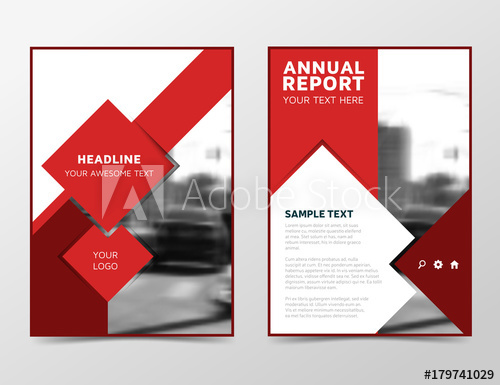

Umme Khaier FatemaContactAddress:Chandgaon thana,Chattogram Phone:01884295855 Facebkook:facebook.com/esi.ta.98 Languages:English Hobbies:Cooking |
Summary
A summary is a record in a reader's own words that gives the main points of a piece of writing such as a newspaper article, the chapter of a book, or even a whole book. It is also possible to summarize something that you have heard, such as a lecture, or something that you have seen and heard, such as a movie. Skill Highlights
1.Project Management 2.Creative Design 3.Innovative 4.Strong Decision Maker Experience
Web Devloper (11-08-2020 to....)A web developer is a programmer who specializes in, or is specifically engaged in, the development of World Wide Web applications using a client–server model Education
Dipoma in Computer TechnologyAugust 2017- running Chittagong Govt. Mohila Polytechnic Institute Protfolio |